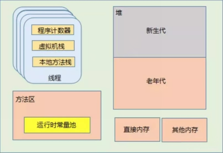
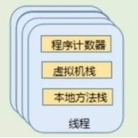
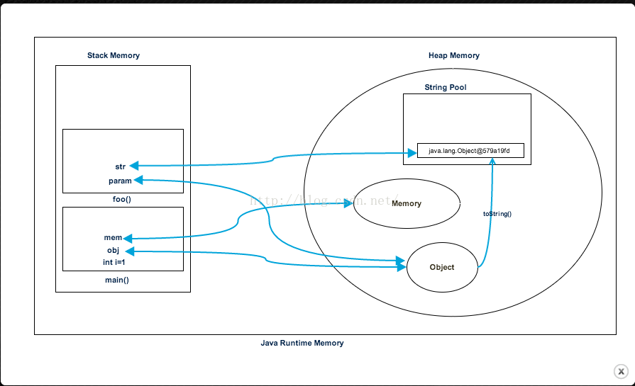

（这是我学习过程中的一些总结）

JAVA虚拟机内存模型
JVM的内存划分中，有部分区域是线程私有的，有部分是属于整个JVM进程；我们将这部分归为一类。

在JVM规范中，每个线程都有自己的程序计数器。这是一块比较小的内存空间，存储当前线程正在执行的Java方法的JVM指令地址，即字节码的行号。 如果正在执行Native方法，则这个计数器为空。
同样也是属于线程私有区域，每个线程在创建的时候都会创建一个虚拟机栈，生命周期与线程一致，线程退出时，线程的虚拟机栈也回收。虚拟机栈内部保持一个个的栈帧，每次方法调用都会进行压栈，JVM对栈帧的操作只有出栈和压栈两种，方法调用结束时会进行出栈操作。该区域存储着局部变量表，编译时期可知的各种基本类型数据、对象引用、方法出口等信息。
与虚拟机栈类似，本地方法栈是在调用本地方法时使用的栈，每个线程都有一个本地方法栈。
1. 同样也是属于线程私有区域，每个线程在创建的时候都会创建一个虚拟机栈，生命周期与线程一致，线程退出时，线程的虚拟机栈也回收。虚拟机栈内部保持一个个的栈帧，每次方法调用都会进行压栈，JVM对栈帧的操作只有出栈和压栈两种，方法调用结束时会进行出栈操作。该区域存储着局部变量表，编译时期可知的各种基本类型数据、对象引用、方法出口等信息。
堆（Heap）,几乎所有创建的Java对象实例，都是被直接分配到堆上的。堆被所有的线程所共享，在堆上的区域，会被垃圾回收器做进一步划分，例如新生代、老年代的划分。Java虚拟机在启动的时候，可以使用“Xmx”之类的参数指定堆区域的大小。
方法区与堆一样，也是所有的线程所共享，存储被虚拟机加载的元（Meta）数据，包括类信息、常量、静态变量、即时编译器编译后的代码等数据。
方法区是一种java虚拟机的规范。由于方法区存储的数据和堆中存储的数据一致，实质上也是堆，因此，在不同的JDK版本中方法区的实现方式不一样。
这是方法区的一部分。常量池主要存放两大类常量：
为了让初学者顺利的分析内存，更加容易的体会程序执行过程中内存的变化，加深理解。我们将JAVA虚拟机内存模型进行简化。
在本节课中，Java虚拟机的内存可以简单的分为三个区域：虚拟机栈stack、堆heap、方法区method area。
虚拟机栈（简称：栈）的特点如下：
堆的特点如下：
方法区（又叫静态区,也是堆）特点如下：
（代码我就不自己写了，这是我学习时候参考过的，底部附带原文链接）
package com.journaldev.test;
public class Memory {
public static void main(String[] args) { // Line 1
int i=1; // Line 2
Object obj = new Object(); // Line 3
Memory mem = new Memory(); // Line 4
mem.foo(obj); // Line 5
} // Line 9
private void foo(Object param) { // Line 6
String str = param.toString(); //// Line 7
System.out.println(str);
} // Line 8
} 下边的图片展示了上边程序堆和栈内存的引用，并且是怎么用来存储原始值、对象和变量的引用。

我们来看看程序执行的过程：
1、只要我们一运行这个程序，它会加载所有的运行类到堆内存中去，当在第一行找到main()方法的时候，Java创建可以被main()方法线程使用的栈内存。
2、当在第一行，我们创建了本地原始变量，它在main()的栈中创建和保存。
3、因为我们在第三行创建了对象，它在堆内存中被创建，在栈内存中保存了它的引用，同样的过程也发生在第四行我们创建Memory对象的时候。
4、当在第五行我们调用foo()方法的时候，在堆的顶部创建了一个块来被foo()方法使用，因为Java是值传递的，在第六行一个新的对象的引用在foo()方法中的栈中被创建
5、在第七行一个String被创建，它在堆空间中的String池中运行，并且它的引用也在foo()方法的栈空间中被创建
6、foo()方法在第八行结束，此时在堆中为foo()方法分配的内存块可以被释放
7、在第九行，main()方法结束，栈为main()方法创建的内存空间可以被销毁。同样程序也在行结束，Java释放了所有的内存，结束了程序的运行
堆内存和栈内存的区别
基于上边的解释我们可以很简单的总结出堆和栈的区别：
1、应用程序所有的部分都使用堆内存，然后栈内存通过一个线程运行来使用。
2、不论对象什么时候创建，他都会存储在堆内存中，栈内存包含它的引用。栈内存只包含原始值变量好和堆中对象变量的引用。
3、存储在堆中的对象是全局可以被访问的，然而栈内存不能被其他线程所访问。
4、栈中的内存管理使用LIFO的方式完成，而堆内存的管理要更复杂了，因为它是全局被访问的。堆内存被分为，年轻一代，老一代等等，更多的细节请看，这篇文章
5、栈内存是生命周期很短的，然而堆内存的生命周期从程序的运行开始到运行结束。
6、我们可以使用-Xms和-Xmx JVM选项定义开始的大小和堆内存的最大值，我们可以使用-Xss定义栈的大小
7、当栈内存满的时候，Java抛出java.lang.StackOverFlowError异常而堆内存满的时候抛出java.lang.OutOfMemoryError: Java Heap Space错误
8、和堆内存比，栈内存要小的多，因为明确使用了内存分配规则（LIFO），和堆内存相比栈内存非常快。
————————————————
版权声明：本文为CSDN博主「遇见美好」的原创文章，遵循CC 4.0 by-sa版权协议，转载请附上原文出处链接及本声明。
原文链接：https://blog.csdn.net/chensi16114/article/details/72867260